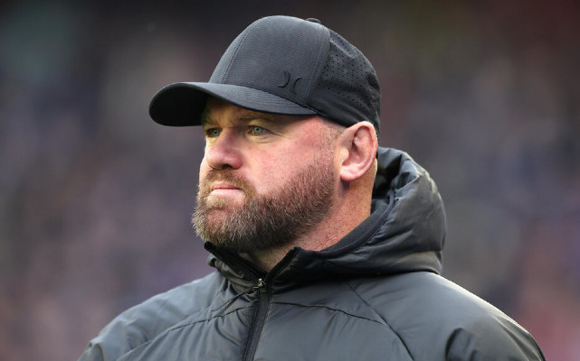

Buổi tập, Carrington, như bao ngày khác; một thói quen thường ngày. Chiếc xe Audi của huấn luyện viên trưởng ở trong bãi đỗ xe; những bước chân dạo qua khu lễ tân của câu lạc bộ với cái mô hình xịn sò của sân Old Trafford ở tiền sảnh. Dọc một hành lang sáng trưng đèn, qua những bức ảnh treo tường nổi tiếng của Busby, Giggsy và Ronaldo; huấn luyện viên trưởng nhìn thật đáng sợ trong một bộ âu phục bảnh bao. Qua vài cánh cửa nữa là bước vào mớ hỗn độn và những lời nói đùa nơi phòng thay đồ.

.Mọi ngày, khi bước vào, tôi đều nhìn cùng một thứ: bức ảnh khổng lồ được đóng khung của đội hình đã giành chức vô địch Champions League vào năm 2008. Nó được treo trên bức tường đối diện với bàn điều trị và là một lời nhắc về những khoảnh khắc vinh quang trong cuộc đời tôi. Tất cả đang ở trên sân đấu tại Moscow, bật những chai sâm panh, có những tiếng cười phá, nở những nụ cười mỉm và đang sống trong cảm xúc hân hoan. Carlos Tevez đang toe toét y như một chú mèo Cheshire. Mái tóc của Ronaldo thì vẫn đẹp không tì vết, dù nó có đang rủ xuống do nước mưa, và thêm vào đó là pháo giấy ở khắp nơi.
Tôi yêu tấm ảnh đó. Mỗi khi tôi nhìn thấy nó, thường là lúc tôi đang chuẩn bị khởi động, chạy bộ, tập luyện, tôi luôn nghĩ rằng: Đó đích thị là sự phấn khích mà bóng đá có thể tạo ra. Tôi nghĩ bản thân rất yêu thích nó vì tôi hiểu đó là một trải nghiệm mà đa số các cầu thủ bóng đá ở tầm cao nhất cũng không thể có được. Nó khiến tôi cảm thấy thật may mắn. Thiêng liêng.
Nhưng tôi còn được tận hưởng bao nhiêu khoảnh khắc như vậy nữa?
Với đa số, một thập kỷ là quãng thời gian dài, nhưng trong bóng đá, cảm giác chỉ như một nhịp tim vì mọi thứ trôi qua quá nhanh - mỗi trận đấu, mỗi bàn thắng, mỗi pha tắc bóng. Không hề có nút tua lại hay nút tạm dừng cho một cầu thủ bóng đá khi mọi sự tập trung đều được dành cho trận đấu tiếp theo, 3 điểm tiếp theo, cho tương lai.Chính vì vậy, tôi đã luôn nhìn về phía trước, tôi chưa bao giờ sống trong khoảnh khắc của hiện tại, mọi thứ đều vút qua. Trong chớp mắt, tôi đã cận kề tuổi 30; tôi được nhắc đến với tư cách là một cầu thủ lớn tuổi tại United. Tôi đã học được những bài học khó. Tôi đã có kinh nghiệm.
Điều đó thật điên rồ. Bên trong, tôi vẫn là cậu nhóc có kiểu đầu cắt mái với đôi chân vòng kiềng, một cậu nhóc vẫn đang ra sân cho đội bóng của trường ở tuổi 14, tràn đầy năng lượng và nhiệt huyết. Sự phấn khích và cả kích thích mà tôi cảm nhận được mỗi khi đặt chân lên thảm cỏ tại Old Trafford vẫn y hệt như hồi tôi còn là một đứa trẻ chơi cho đội bóng của trường. Niềm hân hoan vẫn còn đó, chỉ có tầm cỡ của các trận đấu là khác trước. Thay vì ra sân trong đội hình các cậu bé của Copplehouse, tôi đang thi đấu cho đội bóng mạnh nhất thế giới và không có thứ gì tuyệt vời hơn. Được chơi bóng tại Premier League, ghi những bàn thắng và giành những danh hiệu cho các cổ động viên? Đó chính là những thứ thôi thúc tôi mỗi ngày.
Tuy nhiên, có một điểm khác biệt. Hồi đó, lúc bắt đầu, tôi không thể tưởng tượng nổi việc không chơi bóng. Tôi không thể nhìn thấy điểm kết thúc. Tôi chưa bao giờ hình dung rằng sẽ có ngày tôi không chuẩn bị tinh thần trước một trận đấu, không tự khích lệ bản thân, không xỏ chân vào đôi giày đá bóng.
Giờ thì đã khác. Tôi sắp sửa bước vào giai đoạn đỉnh cao nhất trong sự nghiệp của mình và tôi cảm thấy mạnh mẽ. Tôi đang cải thiện và học hỏi từng ngày nhưng tôi biết mình đã cận kề sườn dốc bên kia của sự nghiệp hơn là điểm xuất phát. Đời cầu thủ là một quãng thời gian vô cùng ngắn, vậy nên ngay lúc này, tôi đang cố để tận hưởng từng đường chuyền, từng bàn thắng, từng pha tắc bóng, vì chúng sẽ không tồn tại mãi. Từ giờ trở đi, tôi cần phải sống trong khoảnh khắc của hiện tại, chỉ một chút thôi.
Huấn luyện viên trưởng chắc cũng có cảm nhận tương tự. Tôi tự hỏi liệu đó có phải lý do ông ấy gắn bó với câu lạc bộ lâu đến vậy - ông ấy đã ở đây 25 năm rồi! Nếu ông ấy có thể dẫn dắt United ở đẳng cấp cao nhất và giành chiến thắng, cảm nhận được sự hưng phấn ấy, thì tại sao ông ấy lại muốn về hưu cơ chứ? Có một cảm giác phấn khích mỗi khi chúng tôi cùng nhau giành các danh hiệu tại United; một liều thuốc kích thích đến điên dại và cần một quãng thời gian để mọi thứ lắng xuống. Tôi có thể cảm nhận mọi lúc. Nhưng ngay khi cảm giác ấy bắt đầu tan biến - khoảng hai đến ba tuần sau đó - tôi cần phải có liều tiếp theo. Tôi muốn cạnh tranh cho những thành công, thêm nữa và nhiều lần nữa. Cơn thèm khát ấy là rất lớn vì chiến thắng là một cảm giác vô cùng tuyệt vời. Ông ấy chắc cũng có cơn khát như vậy.
Đã có vô vàn thăng trầm, vô số khoảnh khắc tuyệt vời trong một thập kỷ của tôi tại Premier League. Chức vô địch vào mùa giải 2006-07 sẽ luôn là danh hiệu tuyệt vời nhất vì đó là chức vô địch đầu tiên của tôi. Tôi phải công nhận một điều rằng, sau hai mùa giải vắng bóng danh hiệu vô địch tại United - và chứng kiến một Chelsea hùng mạnh đã chơi rất tốt ở giải quốc nội - tôi đã nghĩ rằng chúng tôi sẽ không thể vô địch nổi, ít nhất là trong quãng thời gian tới. Điều đó thật ngao ngán, đặc biệt khi đó là vào mùa giải mà tôi rời Everton. Để trở thành một nhà vô địch. Một khi đã giành được danh hiệu đầu tiên, tôi biết mình sẽ giành thêm nhiều danh hiệu nữa.
Chức vô địch Champions League cũng tuyệt vời không kém; trận đấu tại Moscow sẽ mãi là một phần trong tôi - loạt sút luân lưu, sự kịch tính, căng thẳng. Và rồi những bàn thắng qua các năm tháng - pha tung người móc bóng vào lưới City, bàn thắng của tôi cho Everton trước Arsenal, quả penalty trước Blackburn đã giúp United vô địch vào năm 2011. Những khoảnh khắc đó sẽ luôn ở trong tâm trí tôi.
Sẽ là dối trá nếu như tôi nói rằng không có những nốt trầm trong các quãng thăng đó. Thẻ đỏ và những chiếc thẻ phạt. Các chấn thương. Những thất bại tại chung kết Cúp FA, hai lần để thua trước Barça trong trận chung kết Champions League, thất bại trong cuộc đua vô địch với City do hiệu số bàn thắng vào năm 2012. Điều buồn cười là, tôi cũng trân trọng những khoảnh khắc đáng thất vọng ấy. Chúng thôi thúc tôi. Thật lòng mà nói, những thứ đó khiến những thành tựu thêm phần ngọt ngào hơn mỗi khi tôi đạt được.
Có một điều mà tôi đã nhận ra trong suốt một thập kỷ của mình tại Premier League. Tôi luôn khao khát thành công. Bàn thắng, danh hiệu, chức vô địch Champions League, chức vô địch Cúp các câu lạc bộ thế giới, Carling Cup, Cúp FA (sẽ thật tuyệt nếu tôi có một chiếc); bất cứ danh hiệu nào chúng tôi cạnh tranh, tôi đều muốn có vì giành được chúng, như danh hiệu Premier League đầu tiên của tôi vào năm 2007, chính là cảm giác tuyệt vời nhất; nhưng nếu bỏ lỡ chúng, như năm 2012, là cảm giác tồi tệ nhất. Tôi muốn đủ dũng cảm, đủ thật thà, đủ chăm chỉ để có thể tiếp tục chiến thắng và không ngừng giành chiến thắng.
Khi tôi giải nghệ, tôi muốn được nghĩ tới như một người thắng cuộc.
Và tôi quyết tâm đạt được điều đó.
Trong một thập kỷ tới, tôi muốn các cổ động viên nghĩ về tôi như một cầu thủ đã cống hiến hết mình.
Tôi sẽ làm bất cứ điều gì để biến nó thành hiện thực.
Như tôi đã từng nói với vài anh bạn trước khi có màn ra mắt trong màu áo United tại Premier League:
Cứ đưa tôi quả bóng, tôi sẽ làm việc đó.
Tôi không cảm thấy bị đe dọa…
Tôi muốn nó.
Trong 10 năm, với tôi nó là tất cả hoặc không có gì tại giải Premier League. Giải đấu hấp dẫn nhất trên thế giới.
Tôi đã giành 4 danh hiệu quốc nội, 1 chức vô địch Champions League, 2 Carling Cup và 1 Cúp các câu lạc bộ thế giới.
Nhưng cảm giác chỉ như mọi thứ vừa mới bắt đầu.
Tôi đã ghi hàng trăm bàn thắng trong quãng thời gian chơi cho United và Everton. Tôi đã ghi bàn quyết định tại Wembley và có cú đá xe đạp chổng ngược trong trận derby Manchester, khiến cho một nửa thành phố phát điên.
Và không có cảm xúc gì tuyệt hơn thế.
Những quãng thăng và những nốt trầm: đây là câu chuyện về 10 năm của tôi tại Premier League. Quãng đời chơi bóng của tôi tại câu lạc bộ lớn nhất hành tinh.